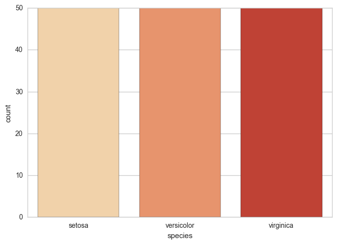
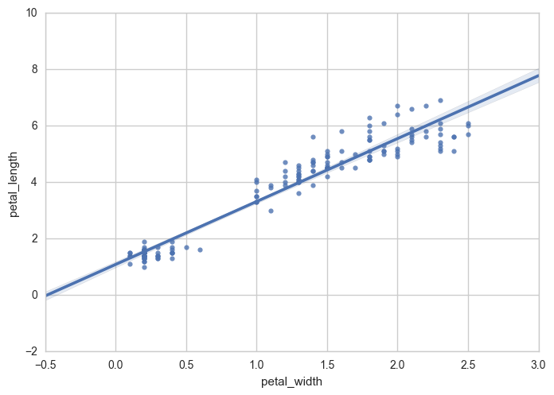

Seaborn is one of the most popular and commonly used libraries for data visualisation.
So, let's kick-off with a quick question.
Do you think it is possible to visualize the relationship between all the variables in the entire data set with just one line of code?
Actually, YES! With the single line of code used below, we can visualize the relationships between all the different variables in the dataset.
sns.pairplot(tips,hue='day',palette="YlGnBu")So, how did it do that?
Well, Seaborn is a high-level Python data visualization library used for making attractive and informative statistical plots. It acts as a wrapper over matplotlib, and it's used in conjunction with NumPy and pandas data structures.
Matplotlib is another data visualization library used when greater control over the graphs are required. However, Seaborn should not be thought as a replacement for matplotlib, rather as a compliment. Even though matplotlib is more powerful, it has a steeper learning curve compared to Seaborn. When using seaborn, it is likely that you will often invoke matplotlib functions directly to draw simpler plots. Another way of putting it is "matplotlib tries to make easy things easier and hard things possible, seaborn attempts to make a well-defined set of hard things easy".
The data analysis libraries, i.e. NumPy and Pandas are an integral part of Data Visualisation and are often required for data preprocessing. However, I will not be going into the preprocessing of data in this blog.
import numpy as np
import pandas as pdimport seaborn as snsNow, we use the command below to view all Seaborn plots within Jupyter Notebook.
%matplotlib inlineNow that we have imported the required libraries, I will be using the famous Iris dataset for this blog. If you are interested, all the other in-built Seaborn datasets are listed here.
iris = sns.load_dataset('iris')So, here is a quick view of the Iris dataset!
iris.head(3)| sepal_length | sepal_width | petal_length | petal_width | species | |
| 0 | 5.1 | 3.5 | 1.4 | 0.2 | setosa |
| 1 | 4.9 | 3.0 | 1.4 | 0.2 | setosa |
| 2 | 4.7 | 3.2 | 1.3 | 0.2 | setosa |
Image:- Different species of Iris Plant
Given below is a brief description of all the variables:
sepal_length-> Sepal length in cm
sepal_width -> Sepal width in cm
petal_length -> Petal length in cm
petal_width -> Petal width in cm
species -> Class of the Iris Plant
* Iris Setosa
* Iris Versicolour
* Iris Virginica
To know more about the Iris Dataset, you can refer UC Irvine Machine Learning Repository.
Dist Plot, also known as Histogram is used to plot a univariate distribution of observation. It also displays a KDE(Kernal Density Estimation) plot over the histogram.
In the plot below, we are plotting a histogram of the petal_width.
sns.distplot(a=iris['petal_width'], bins=40, color='m')Count Plot displays the number of observations for a categorical variable using bars.
In the plot below, we are counting the number of observations of each species of Iris Plant, and we can see that each species has 50 samples in the dataset.
sns.countplot(x='species',data=iris, palette="OrRd")
A box plot shows the distribution of quantitative data across a categorical variable.
In the plot below, the quantitative data that we have used is the sepal_width, and we are comparing it to the categorical variable species.
sns.boxplot(x='species',y='sepal_width',data=iris ,palette='YlGnBu')A violin plot is a variation of box plot. It shows the distribution of quantitative data across several levels of categorical variables. The violin plot also features a kde of the underlying distribution.
In the plot below, the petal_length is compared against species.
sns.violinplot(x='species', y='petal_length', data=iris, palette='YlGnBu')A Heat Map is a graphical representation of the correlation between all the numerical variables in a dataset. The input provided is a correlation matrix generated using pandas.
sns.heatmap(iris.corr(),cmap="YlGnBu", linecolor='white', linewidths=1)Cluster Map is a plot of matrix dataset as a hierarchically clustered heatmap.
Note Cluster map can only take in quantitative variables.
g = sns.clustermap(iris, cmap="magma")Regression Plot is used to map all the given data and plot a linear regression model fit for it.
In the example below, we have plotted the petal_width against the petal_length.
sns.regplot(x='petal_width', y='petal_length', data=iris)
Axis Grids are graphs that combine various plots using FacetGrid to realize complex visualizations.
LM plots are intended as a convenient interface to fit regression models (regression line) across conditional subsets of a dataset. It is a variation of regplot which uses FacetGrid to plot multiple subsets of data and plot the regression line for each of them.
In the example below, we have plotted sepalwidth vs. sepallength. The data set is divided into three subsets based on their species, and regression lines are mapped for each of them.
sns.lmplot(x = 'sepal_width', y = 'sepal_length', data = iris, col = 'species', hue = 'species', palette = 'YlGnBu')A joint plot is used to draw a plot of two variables with bivariate and univariate graphs.
In the example below, the kdeplots (univariate graphs) at the top and right are kde's of sepal_width and petal_length respectively, and the central graph (bivariate graph) plots the relationship between the two variables.
sns.jointplot(x="sepal_width", y="petal_length", data=iris, kind="kde", color="m")Pair Plot is used to view the pairwise relationship between all the variables in a dataset and the diagonal axes show the univariate distribution of the variable.
The example takes the entire dataset as input and distinguishes data on species with varying colors.
sns.pairplot(iris, hue='species', palette="OrRd")Now that you are comfortable with the basics of Seaborn you can learn more about data visualization at seaborn.pydata.org.
[1]https://seaborn.pydata.org/index.html
[2]https://www.slideshare.net/Centerline_Digital/the-importance-of-data-visualization
[3]https://tryolabs.com/blog/2017/03/16/pandas-seaborn-a-guide-to-handle-visualize-data-elegantly/
[4]https://www.datacamp.com/community/tutorials/machine-learning-in-r#one